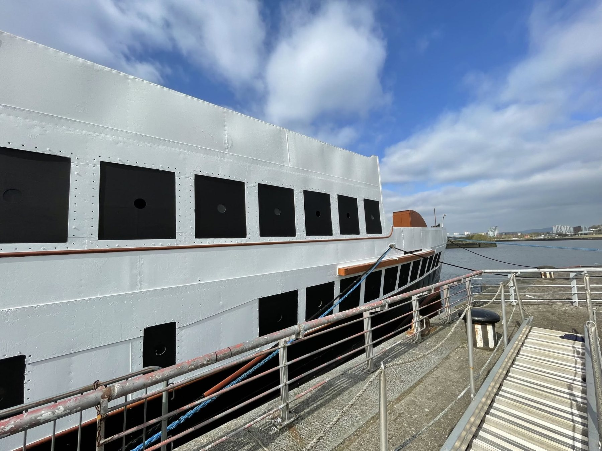
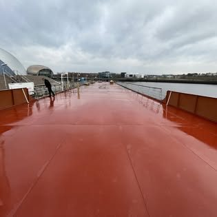
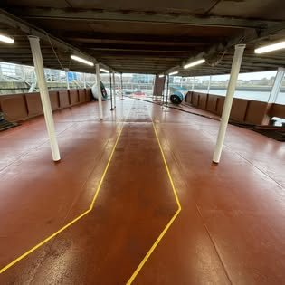

Artist’s impression
Doon the Watter
The classic Clyde excursion she ran for forty-four seasons. Morning departure from Pacific Quay, two hours ashore at Rothesay, home by evening.
From£95

Sailing from Glasgow · 2027
Day sailings, overnight voyages and private charter aboard the last turbine steamer built on this river.
Archive photograph courtesy of Friends of TS Queen Mary
Itineraries
Indicative routes. Final itineraries depend on berthing agreements and certification.
The classic Clyde excursion she ran for forty-four seasons. Morning departure from Pacific Quay, two hours ashore at Rothesay, home by evening.
From£95
Two nights aboard with a cabin, dinner at the captain’s table and a day ashore on Arran. Limited to sixty guests.
From£640
The long voyage. Five nights, four islands, and the west coast from the deck of a 1933 steamer.
From£1,850
The ship
A direct-drive turbine steamer by William Denny and Brothers, and the last of two hundred and fifty built on this river.
She carried thirteen thousand passengers a week in her prime. Restored, she carries three hundred in considerably more comfort — and remains the only vessel of her type anywhere in the world. National Historic Ships lists her as nationally pre-eminent.




Photographs courtesy of Friends of TS Queen Mary.
Staterooms
Thirty cabins across three grades. Every one outside, every one with a window.
£180 pp / night
£265 pp / night
£420 pp / night
Indicative pricing for modelling purposes. Artist’s impression
Dining
When Cunard took her name in 1935 they sent back a portrait of the Queen to hang in the forward lounge. The lounge is being restored around it, and it is where dinner is served.

The covered deck as it stands, before fit-out.
Private charter
Corporate days, weddings and receptions, alongside or under way. Up to three hundred guests. Charter is by enquiry — there is no published price, because no two are the same.
Reservations
A working demonstration of the booking flow. Nothing is charged and no card is taken.
For investors
A restored heritage vessel with three revenue lines, in a market that already exists on this coast.

A note on honesty. Every figure on this page is indicative and every image is an artist’s impression. Nothing here represents a forecast the company has adopted. If the operating company sits under the charity, conventional equity may not be the right instrument at all — impact investors, heritage funders and lenders may suit better, and that changes the tone of this whole section.